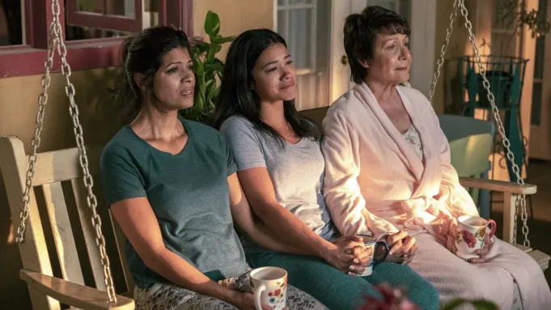
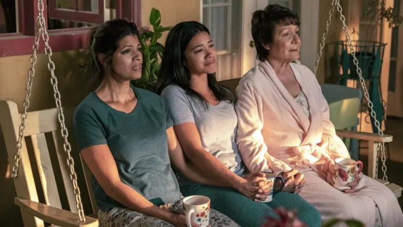

Sobre la serie
Protagonizada por Gina Rodríguez, la serie es una adaptación libre de una telenovela venezolana. A lo largo de sus cinco temporadas, mezcla el melodrama clásico con la ironía moderna, abordando temas como la familia, el amor, la identidad y la maternidad, todo narrado con un toque de humor y un narrador omnipresente que aporta frescura y dinamismo a cada episodio.
 


¿Por qué verla?
- Combina comedia, romance y suspenso en cada capítulo, logrando que siempre quieras ver el siguiente episodio.
- Tiene personajes entrañables y bien construidos, con los que es fácil encariñarse
- La narración en tono de telenovela hace que la historia sea divertida y original.
- Transmite mensajes positivos sobre la familia, los sueños y la superación personal.
Mira el tráiler oficial
Datos curiosos
- Gina Rodríguez ganó un Globo de Oro por su papel en la primera temporada
- Cada capítulo incluye referencias a telenovelas clásicas latinoamericanas.
- El narrador de la historia se volvió un ícono de la serie por su estilo único y sarcástico.